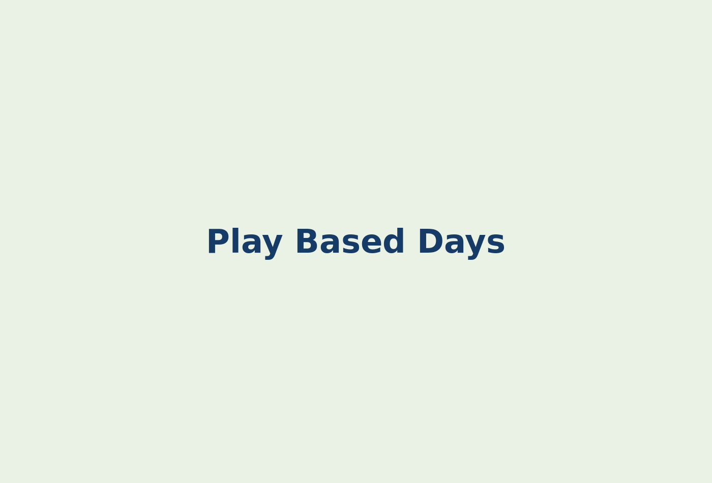

Outdoor play
Fresh air, movement, seasonal observation, and active games.
Life at Children’s Circle
Children have time for play, rest, meals, outdoor movement, creative work, and caring connection.

Every room follows age-appropriate routines that help children feel secure. Educators adapt the day to children’s needs, interests, weather, and classroom projects.
Greeting, settling, and play.
Indoor and outdoor learning.
Meals, quiet time, and comfort.
Stories, music, and pick-up.
Fresh air, movement, seasonal observation, and active games.
Art, music, dramatic play, building, and storytelling.
Small moments of care help children practise empathy and friendship.